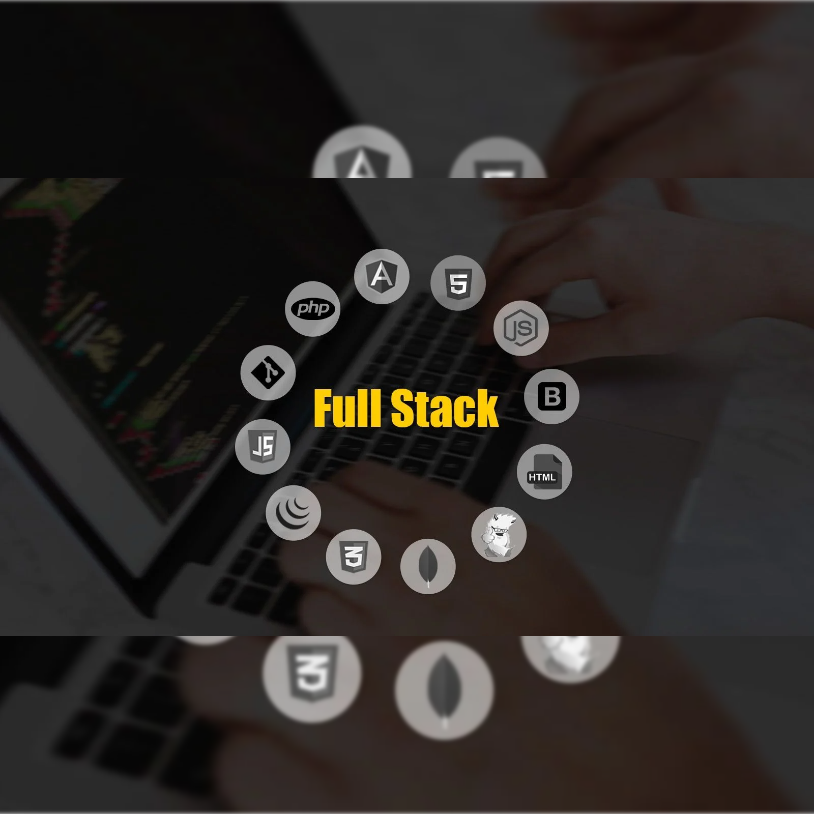

<div id="about">
    <div class="container">
        <div class="row">
            <div class="about-col-1">
                
            </div>
            <div class="about-col-2">
                <h1 class="sub-title">About Me</h1>
                <p>I am a passionate Full Stack Developer with expertise in building scalable web applications using a
                    diverse set of technologies. With a solid foundation in both backend and frontend development.</p>
                <div class="tab-titles">
                    <p [ngClass]="isSkills? 'tab-links active-link' : 'tab-links'" (click)="onTabLinkClick('skills')">
                        Skills</p>
                    <p [ngClass]="isExperience? 'tab-links active-link' : 'tab-links'"
                        (click)="onTabLinkClick('experience')">Experience</p>
                    <p [ngClass]="isEducation? 'tab-links active-link' : 'tab-links'"
                        (click)="onTabLinkClick('education')">Education & Achievements</p>
                </div>
                <div *ngIf="isSkills" class="tab-content">
                    <ul>
                        <li><span>Backend Development</span><br>Java, Spring Boot. MySQL, Elasticsearch, Spring
                            Security.Experienced in building robust
                            backend services with Spring Boot, utilizing
                            both MySQL and MongoDB for database
                            management with object-relational
                            mapping (ORM) using Hibernate.. <br></li><br>
                        <li><span>Frontend Development</span><br>Proficient in
                            developing end-to-end web applications
                            using Angular, HTML, CSS, JavaScript and
                            jsonForms.</li><br>
                        <li><span>Spring Security & JWT:</span><br>Securing
                            applications with authentication and
                            authorization.</li><br>
                        <li><span>Elasticsearch</span><br>Capable of implementing
                            search and analytics solutions.</li>
                        <br>
                        <li><span>Jasmine/JUnit</span><br>Writing unit tests to
                            ensure code reliability</li>
                        <li><span>Azure</span><br>Proficient in utilizing Azure services
                            for full-stack development.
                        </li>
                        <li><span>Git</span><br>Proficient in version control for
                            collaborative development</li>
                    </ul>
                </div>
                <div *ngIf="isExperience" class="tab-content">
                    <ul>

                        <li><span>Senior System Engineer</span><br>
                            <b>Infosys limited</b> | March 2024- Present</li><br>
                        <li><span>System Engineer</span><br>
                            <b>Infosys limited</b> | Feb 2022- Feb 2024 </li><br>
                        <li><span>Project: Toolbox-Horizon (Client: Boeing)
                            </span><br>&#8718;<b>Technologies Used:</b>Spring Boot, Java, Angular, JSONForms,
                            Azure, Unit Testing, Elasticsearch.
                            <br>&#8718;<b>Project Description:</b> Toolbox-Horizon is a comprehensive
                            project aimed at enhancing the efficiency and reliability of an
                            aerospace company's tool management system. The project
                            focuses on improving user experience through a consolidated
                            home screen, advanced search functionalities, and seamless
                            data browsing.
                        </li>
                    </ul>
                </div>
                <div *ngIf="isEducation" class="tab-content">
                    <ul>
                        <li><span>Bachelor of Electrical Engineering</span>
                            <br>University: Amaravti<br>
                            Graduation Year: 2019
                        </li>
                        <li><span>Achievements</span><br>&#8718;<b>Recognition or Awards:</b>Received Awards Insta
                            Award,
                            Learning Champ and Star Performer of Month from peers
                            and superiors for outstanding performance, innovative
                            solutions, or exceptional contributions to project success.
                            <br>&#8718;<b>Team Collaboration:</b>Actively contributed to cross-functional
                            teams, fostering collaboration and knowledge sharing,
                            resulting in accelerated project timelines and improved team
                            morale.
                            <br>&#8718;<b>Training and Mentorship:</b> Provided guidance and
                            mentorship to junior team members, within the
                            organization.
                        </li>
                    </ul>
                </div>
            </div>
        </div>
    </div>

    <!-- <app-footer></app-footer> -->